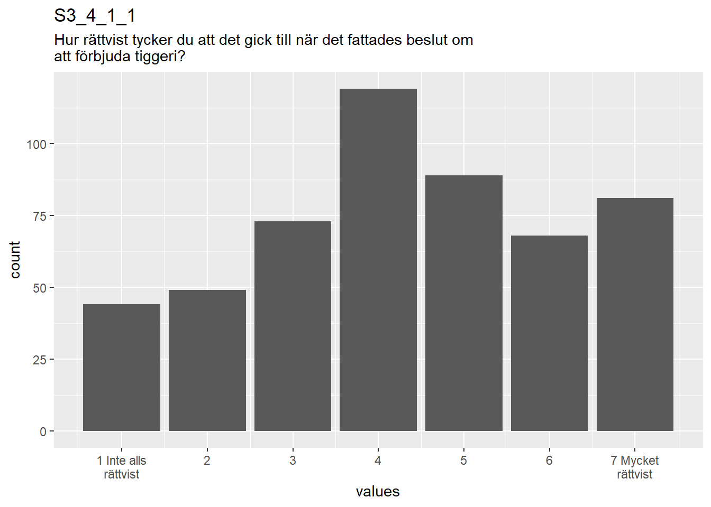
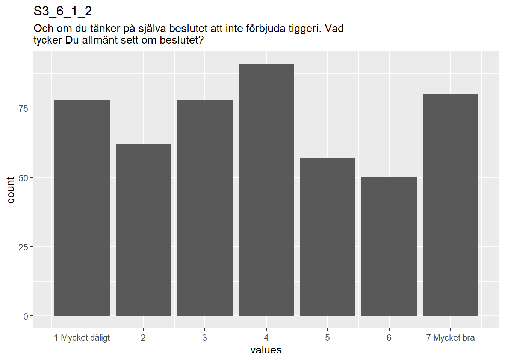
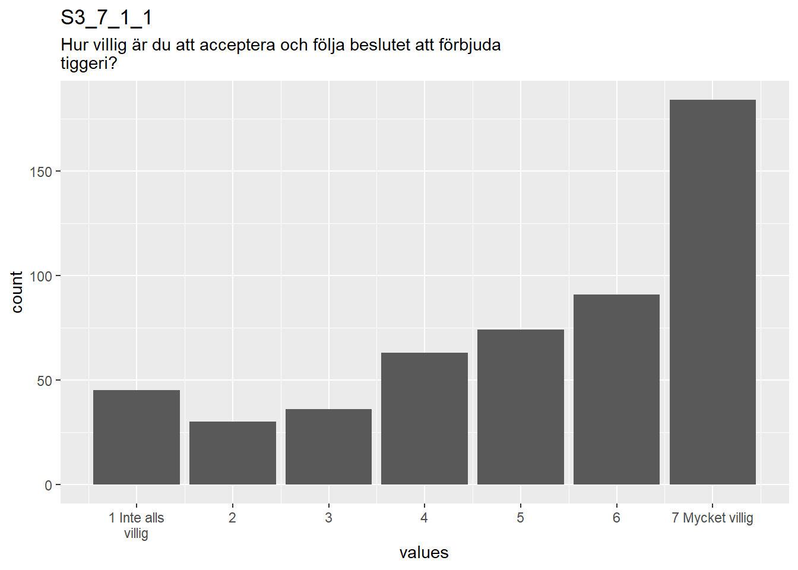
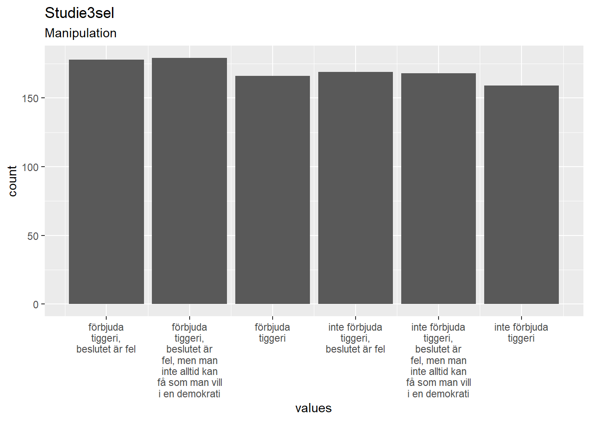

Chapter 5 Codebook
This chapter displays the codebook for the data set of the first Good Loser experiment, automatically generated using the R package “codebook”.
## # A tibble: 1,019 x 14
## Q64 Q63 S3_1_1 S3_2_1 S3_4_1_1 S3_4_1_2 S3_5_1 S3_6_1_1 S3_6_1_2
## <dbl> <dbl+l> <dbl+l> <dbl+l> <dbl+lb> <dbl+lb> <dbl+l> <dbl+lb> <dbl+lb>
## 1 52 2 [Kvi~ 1 [Jag~ 5 [5] 1 [1 In~ NA 4 [4] 1 [1 My~ NA
## 2 30 2 [Kvi~ 2 [Jag~ 3 [3] 4 [4] NA 4 [4] 5 [5] NA
## 3 64 2 [Kvi~ 1 [Jag~ 4 [4] 5 [5] NA 2 [2] 2 [2] NA
## 4 43 2 [Kvi~ 2 [Jag~ 2 [2] 4 [4] NA 4 [4] 7 [7 My~ NA
## 5 74 1 [Man] 2 [Jag~ 7 [7 M~ 4 [4] NA 4 [4] 4 [4] NA
## 6 51 2 [Kvi~ 1 [Jag~ 4 [4] 1 [1 In~ NA 1 [1 M~ 4 [4] NA
## 7 58 1 [Man] 2 [Jag~ 7 [7 M~ 7 [7 My~ NA 7 [7 M~ 6 [6] NA
## 8 55 1 [Man] 2 [Jag~ 4 [4] 4 [4] NA 4 [4] 6 [6] NA
## 9 68 2 [Kvi~ 2 [Jag~ 3 [3] 3 [3] NA 3 [3] 3 [3] NA
## 10 32 1 [Man] 2 [Jag~ 5 [5] 6 [6] NA 6 [6] 5 [5] NA
## # ... with 1,009 more rows, and 5 more variables: S3_7_1_1 <dbl+lbl>,
## # S3_7_1_2 <dbl+lbl>, S3_8_1_1 <dbl+lbl>, S3_8_1_2 <dbl+lbl>,
## # Studie3sel <dbl+lbl>5.0.1 Metadata
5.0.1.1 Description
Dataset name: d
The dataset has N=1019 rows and 14 columns. 0 rows have no missing values on any column.
Metadata for search engines
Date published: 2020-02-21
- keywords: Q64, Q63, S3_1_1, S3_2_1, S3_4_1_1, S3_4_1_2, S3_5_1, S3_6_1_1, S3_6_1_2, S3_7_1_1, S3_7_1_2, S3_8_1_1, S3_8_1_2 and Studie3sel
5.1 Variables
5.1.1 Q64
Ålder
5.1.1.1 Distribution

4 missing values.
5.1.1.2 Summary statistics
| name | label | data_type | n_missing | complete_rate | min | median | max | mean | sd | hist | format.spss | display_width |
|---|---|---|---|---|---|---|---|---|---|---|---|---|
| Q64 | Ålder | numeric | 4 | 0.9961 | 18 | 54 | 86 | 52.46 | 17.74 | ▅▆▆▇▃ | F8.0 | 10 |
5.1.2 Q63
Kön
5.1.2.1 Distribution

0 missing values.
5.1.2.2 Summary statistics
| name | label | data_type | value_labels | n_missing | complete_rate | min | median | max | mean | sd | n_value_labels | hist | format.spss | display_width |
|---|---|---|---|---|---|---|---|---|---|---|---|---|---|---|
| Q63 | Kön | haven_labelled |
|
0 | 1 | 1 | 2 | 2 | 1.517 | 0.5 | 2 | ▇▁▁▁▁▁▁▇ | F1.0 | 12 |
5.1.2.3 Value labels
- Man: 1
- Kvinna: 2
5.1.3 S3_1_1
I debatten diskuteras ibland att kommunerna skall kunna förbjuda tiggeri inom sina gränser. Vad tycker du själv om att förbjuda tiggeri i kommunen där du bor?
5.1.3.1 Distribution

0 missing values.
5.1.3.2 Summary statistics
| name | label | data_type | value_labels | n_missing | complete_rate | min | median | max | mean | sd | n_value_labels | hist | format.spss | display_width |
|---|---|---|---|---|---|---|---|---|---|---|---|---|---|---|
| S3_1_1 | I debatten diskuteras ibland att kommunerna skall kunna förbjuda tiggeri inom sina gränser. Vad tycker du själv om att förbjuda tiggeri i kommunen där du bor? | haven_labelled |
|
0 | 1 | 1 | 2 | 2 | 1.563 | 0.4962 | 2 | ▆▁▁▁▁▁▁▇ | F1.0 | 12 |
5.1.3.3 Value labels
- Jag är huvudsakligen emot att förbjuda tiggeri i min kommun: 1
- Jag är huvudsakligen för att förbjuda tiggeri i min kommun: 2
5.1.4 S3_2_1
Hur viktig är frågan för dig personligen?
5.1.4.1 Distribution

0 missing values.
5.1.4.2 Summary statistics
| name | label | data_type | value_labels | n_missing | complete_rate | min | median | max | mean | sd | n_value_labels | hist | format.spss | display_width |
|---|---|---|---|---|---|---|---|---|---|---|---|---|---|---|
| S3_2_1 | Hur viktig är frågan för dig personligen? | haven_labelled |
|
0 | 1 | 1 | 4 | 7 | 4.044 | 1.789 | 7 | ▃▆▇▇▁▇▅▅ | F1.0 | 12 |
5.1.4.3 Value labels
- 1 Inte alls viktig: 1
- 2: 2
- 3: 3
- 4: 4
- 5: 5
- 6: 6
- 7 Mycket viktig: 7
5.1.5 S3_4_1_1
Hur rättvist tycker du att det gick till när det fattades beslut om att förbjuda tiggeri?
5.1.5.1 Distribution

496 missing values.
5.1.5.2 Summary statistics
| name | label | data_type | value_labels | n_missing | complete_rate | min | median | max | mean | sd | n_value_labels | hist | format.spss | display_width |
|---|---|---|---|---|---|---|---|---|---|---|---|---|---|---|
| S3_4_1_1 | Hur rättvist tycker du att det gick till när det fattades beslut om att förbjuda tiggeri? | haven_labelled |
|
496 | 0.5132 | 1 | 4 | 7 | 4.316 | 1.806 | 7 | ▃▃▅▇▁▆▅▆ | F1.0 | 12 |
5.1.5.3 Value labels
- 1 Inte alls rättvist: 1
- 2: 2
- 3: 3
- 4: 4
- 5: 5
- 6: 6
- 7 Mycket rättvist: 7
5.1.6 S3_4_1_2
Hur rättvist tycker du att det gick till när det fattades beslut om att inte förbjuda tiggeri?
5.1.6.1 Distribution

523 missing values.
5.1.6.2 Summary statistics
| name | label | data_type | value_labels | n_missing | complete_rate | min | median | max | mean | sd | n_value_labels | hist | format.spss |
|---|---|---|---|---|---|---|---|---|---|---|---|---|---|
| S3_4_1_2 | Hur rättvist tycker du att det gick till när det fattades beslut om att inte förbjuda tiggeri? | haven_labelled |
|
523 | 0.4868 | 1 | 4 | 7 | 4.397 | 1.889 | 7 | ▃▂▅▇▁▅▅▆ | F1.0 |
5.1.6.3 Value labels
- 1 Inte alls rättvist: 1
- 2: 2
- 3: 3
- 4: 4
- 5: 5
- 6: 6
- 7 Mycket rättvist: 7
5.1.7 S3_5_1
Och hur schysst tycker du att beslutsproceduren var?
5.1.7.1 Distribution

0 missing values.
5.1.7.2 Summary statistics
| name | label | data_type | value_labels | n_missing | complete_rate | min | median | max | mean | sd | n_value_labels | hist | format.spss | display_width |
|---|---|---|---|---|---|---|---|---|---|---|---|---|---|---|
| S3_5_1 | Och hur schysst tycker du att beslutsproceduren var? | haven_labelled |
|
0 | 1 | 1 | 4 | 7 | 4.21 | 1.706 | 7 | ▂▂▅▇▁▆▃▃ | F1.0 | 12 |
5.1.7.3 Value labels
- 1 Mycket oschysst: 1
- 2: 2
- 3: 3
- 4: 4
- 5: 5
- 6: 6
- 7 Mycket schysst: 7
5.1.8 S3_6_1_1
Och om du tänker på själva beslutet att förbjuda tiggeri. Vad tycker Du allmänt sett om beslutet?
5.1.8.1 Distribution

496 missing values.
5.1.8.2 Summary statistics
| name | label | data_type | value_labels | n_missing | complete_rate | min | median | max | mean | sd | n_value_labels | hist | format.spss | display_width |
|---|---|---|---|---|---|---|---|---|---|---|---|---|---|---|
| S3_6_1_1 | Och om du tänker på själva beslutet att förbjuda tiggeri. Vad tycker Du allmänt sett om beslutet? | haven_labelled |
|
496 | 0.5132 | 1 | 5 | 7 | 4.38 | 2.126 | 7 | ▆▃▃▆▁▅▆▇ | F1.0 | 12 |
5.1.8.3 Value labels
- 1 Mycket dåligt: 1
- 2: 2
- 3: 3
- 4: 4
- 5: 5
- 6: 6
- 7 Mycket bra: 7
5.1.9 S3_6_1_2
Och om du tänker på själva beslutet att inte förbjuda tiggeri. Vad tycker Du allmänt sett om beslutet?
5.1.9.1 Distribution

523 missing values.
5.1.9.2 Summary statistics
| name | label | data_type | value_labels | n_missing | complete_rate | min | median | max | mean | sd | n_value_labels | hist | format.spss |
|---|---|---|---|---|---|---|---|---|---|---|---|---|---|
| S3_6_1_2 | Och om du tänker på själva beslutet att inte förbjuda tiggeri. Vad tycker Du allmänt sett om beslutet? | haven_labelled |
|
523 | 0.4868 | 1 | 4 | 7 | 3.921 | 2.011 | 7 | ▇▆▇▇▁▅▅▇ | F1.0 |
5.1.9.3 Value labels
- 1 Mycket dåligt: 1
- 2: 2
- 3: 3
- 4: 4
- 5: 5
- 6: 6
- 7 Mycket bra: 7
5.1.10 S3_7_1_1
Hur villig är du att acceptera och följa beslutet att förbjuda tiggeri?
5.1.10.1 Distribution

496 missing values.
5.1.10.2 Summary statistics
| name | label | data_type | value_labels | n_missing | complete_rate | min | median | max | mean | sd | n_value_labels | hist | format.spss | display_width |
|---|---|---|---|---|---|---|---|---|---|---|---|---|---|---|
| S3_7_1_1 | Hur villig är du att acceptera och följa beslutet att förbjuda tiggeri? | haven_labelled |
|
496 | 0.5132 | 1 | 6 | 7 | 5.103 | 1.966 | 7 | ▂▁▂▃▁▃▃▇ | F1.0 | 12 |
5.1.10.3 Value labels
- 1 Inte alls villig: 1
- 2: 2
- 3: 3
- 4: 4
- 5: 5
- 6: 6
- 7 Mycket villig: 7
5.1.11 S3_7_1_2
Hur villig är du att acceptera och följa beslutet att inte förbjuda tiggeri?
5.1.11.1 Distribution

523 missing values.
5.1.11.2 Summary statistics
| name | label | data_type | value_labels | n_missing | complete_rate | min | median | max | mean | sd | n_value_labels | hist | format.spss |
|---|---|---|---|---|---|---|---|---|---|---|---|---|---|
| S3_7_1_2 | Hur villig är du att acceptera och följa beslutet att inte förbjuda tiggeri? | haven_labelled |
|
523 | 0.4868 | 1 | 6 | 7 | 5.143 | 2.006 | 7 | ▂▁▁▃▁▂▃▇ | F1.0 |
5.1.11.3 Value labels
- 1 Inte alls villig: 1
- 2: 2
- 3: 3
- 4: 4
- 5: 5
- 6: 6
- 7 Mycket villig: 7
5.1.12 S3_8_1_1
När det gäller att följa eller motarbeta beslutet att förbjuda tiggeri, var på skalan skulle du placera dig?
5.1.12.1 Distribution

496 missing values.
5.1.12.2 Summary statistics
| name | label | data_type | value_labels | n_missing | complete_rate | min | median | max | mean | sd | n_value_labels | hist | format.spss | display_width |
|---|---|---|---|---|---|---|---|---|---|---|---|---|---|---|
| S3_8_1_1 | När det gäller att följa eller motarbeta beslutet att förbjuda tiggeri, var på skalan skulle du placera dig? | haven_labelled |
|
496 | 0.5132 | 1 | 6 | 7 | 5.176 | 1.852 | 7 | ▁▁▂▃▁▂▃▇ | F1.0 | 12 |
5.1.12.3 Value labels
- 1 Kommer absolut att motarbeta beslutet: 1
- 2: 2
- 3: 3
- 4: 4
- 5: 5
- 6: 6
- 7 Kommer absolut att följa beslutet: 7
5.1.13 S3_8_1_2
När det gäller att följa eller motarbeta beslutet att inte förbjuda tiggeri, var på skalan skulle du placera dig?
5.1.13.1 Distribution

523 missing values.
5.1.13.2 Summary statistics
| name | label | data_type | value_labels | n_missing | complete_rate | min | median | max | mean | sd | n_value_labels | hist | format.spss |
|---|---|---|---|---|---|---|---|---|---|---|---|---|---|
| S3_8_1_2 | När det gäller att följa eller motarbeta beslutet att inte förbjuda tiggeri, var på skalan skulle du placera dig? | haven_labelled |
|
523 | 0.4868 | 1 | 5 | 7 | 5.095 | 1.867 | 7 | ▁▁▂▅▁▂▃▇ | F1.0 |
5.1.13.3 Value labels
- 1 Kommer absolut att motarbeta beslutet: 1
- 2: 2
- 3: 3
- 4: 4
- 5: 5
- 6: 6
- 7 Kommer absolut att följa beslutet: 7
5.1.14 Studie3sel
Manipulation
5.1.14.1 Distribution

0 missing values.
5.1.14.2 Summary statistics
| name | label | data_type | value_labels | n_missing | complete_rate | min | median | max | mean | sd | n_value_labels | hist | format.spss | display_width |
|---|---|---|---|---|---|---|---|---|---|---|---|---|---|---|
| Studie3sel | Manipulation | haven_labelled |
|
0 | 1 | 1 | 3 | 6 | 3.439 | 1.707 | 6 | ▇▇▁▇▇▁▇▇ | F1.0 | 12 |
5.1.14.3 Value labels
- förbjuda tiggeri, beslutet är fel: 1
- förbjuda tiggeri, beslutet är fel, men man inte alltid kan få som man vill i en demokrati: 2
- förbjuda tiggeri: 3
- inte förbjuda tiggeri, beslutet är fel: 4
- inte förbjuda tiggeri, beslutet är fel, men man inte alltid kan få som man vill i en demokrati: 5
- inte förbjuda tiggeri: 6
5.2 Missingness report
5.3 Codebook table
JSON-LD metadata
The following JSON-LD can be found by search engines, if you share this codebook
publicly on the web.
{
"name": "d",
"datePublished": "2020-02-21",
"description": "The dataset has N=1019 rows and 14 columns.\n0 rows have no missing values on any column.\n\n\n## Table of variables\nThis table contains variable names, labels, and number of missing values.\nSee the complete codebook for more.\n\n|name |label | n_missing|\n|:----------|:--------------------------------------------------------------------------------------------------------------------------------------------------------------|---------:|\n|Q64 |Ålder | 4|\n|Q63 |Kön | 0|\n|S3_1_1 |I debatten diskuteras ibland att kommunerna skall kunna förbjuda tiggeri inom sina gränser. Vad tycker du själv om att förbjuda tiggeri i kommunen där du bor? | 0|\n|S3_2_1 |Hur viktig är frågan för dig personligen? | 0|\n|S3_4_1_1 |Hur rättvist tycker du att det gick till när det fattades beslut om att förbjuda tiggeri? | 496|\n|S3_4_1_2 |Hur rättvist tycker du att det gick till när det fattades beslut om att inte förbjuda tiggeri? | 523|\n|S3_5_1 |Och hur schysst tycker du att beslutsproceduren var? | 0|\n|S3_6_1_1 |Och om du tänker på själva beslutet att förbjuda tiggeri. Vad tycker Du allmänt sett om beslutet? | 496|\n|S3_6_1_2 |Och om du tänker på själva beslutet att inte förbjuda tiggeri. Vad tycker Du allmänt sett om beslutet? | 523|\n|S3_7_1_1 |Hur villig är du att acceptera och följa beslutet att förbjuda tiggeri? | 496|\n|S3_7_1_2 |Hur villig är du att acceptera och följa beslutet att inte förbjuda tiggeri? | 523|\n|S3_8_1_1 |När det gäller att följa eller motarbeta beslutet att förbjuda tiggeri, var på skalan skulle du placera dig? | 496|\n|S3_8_1_2 |När det gäller att följa eller motarbeta beslutet att inte förbjuda tiggeri, var på skalan skulle du placera dig? | 523|\n|Studie3sel |Manipulation | 0|\n\n### Note\nThis dataset was automatically described using the [codebook R package](https://rubenarslan.github.io/codebook/) (version 0.8.2).",
"keywords": ["Q64", "Q63", "S3_1_1", "S3_2_1", "S3_4_1_1", "S3_4_1_2", "S3_5_1", "S3_6_1_1", "S3_6_1_2", "S3_7_1_1", "S3_7_1_2", "S3_8_1_1", "S3_8_1_2", "Studie3sel"],
"@context": "http://schema.org/",
"@type": "Dataset",
"variableMeasured": [
{
"name": "Q64",
"description": "Ålder",
"@type": "propertyValue"
},
{
"name": "Q63",
"description": "Kön",
"value": "1. Man,\n2. Kvinna",
"maxValue": 2,
"minValue": 1,
"@type": "propertyValue"
},
{
"name": "S3_1_1",
"description": "I debatten diskuteras ibland att kommunerna skall kunna förbjuda tiggeri inom sina gränser. Vad tycker du själv om att förbjuda tiggeri i kommunen där du bor?",
"value": "1. Jag är huvudsakligen emot att förbjuda tiggeri i min kommun,\n2. Jag är huvudsakligen för att förbjuda tiggeri i min kommun",
"maxValue": 2,
"minValue": 1,
"@type": "propertyValue"
},
{
"name": "S3_2_1",
"description": "Hur viktig är frågan för dig personligen?",
"value": "1. 1 Inte alls viktig,\n2. 2,\n3. 3,\n4. 4,\n5. 5,\n6. 6,\n7. 7 Mycket viktig",
"maxValue": 7,
"minValue": 1,
"@type": "propertyValue"
},
{
"name": "S3_4_1_1",
"description": "Hur rättvist tycker du att det gick till när det fattades beslut om att förbjuda tiggeri?",
"value": "1. 1 Inte alls rättvist,\n2. 2,\n3. 3,\n4. 4,\n5. 5,\n6. 6,\n7. 7 Mycket rättvist",
"maxValue": 7,
"minValue": 1,
"@type": "propertyValue"
},
{
"name": "S3_4_1_2",
"description": "Hur rättvist tycker du att det gick till när det fattades beslut om att inte förbjuda tiggeri?",
"value": "1. 1 Inte alls rättvist,\n2. 2,\n3. 3,\n4. 4,\n5. 5,\n6. 6,\n7. 7 Mycket rättvist",
"maxValue": 7,
"minValue": 1,
"@type": "propertyValue"
},
{
"name": "S3_5_1",
"description": "Och hur schysst tycker du att beslutsproceduren var?",
"value": "1. 1 Mycket oschysst,\n2. 2,\n3. 3,\n4. 4,\n5. 5,\n6. 6,\n7. 7 Mycket schysst",
"maxValue": 7,
"minValue": 1,
"@type": "propertyValue"
},
{
"name": "S3_6_1_1",
"description": "Och om du tänker på själva beslutet att förbjuda tiggeri. Vad tycker Du allmänt sett om beslutet?",
"value": "1. 1 Mycket dåligt,\n2. 2,\n3. 3,\n4. 4,\n5. 5,\n6. 6,\n7. 7 Mycket bra",
"maxValue": 7,
"minValue": 1,
"@type": "propertyValue"
},
{
"name": "S3_6_1_2",
"description": "Och om du tänker på själva beslutet att inte förbjuda tiggeri. Vad tycker Du allmänt sett om beslutet?",
"value": "1. 1 Mycket dåligt,\n2. 2,\n3. 3,\n4. 4,\n5. 5,\n6. 6,\n7. 7 Mycket bra",
"maxValue": 7,
"minValue": 1,
"@type": "propertyValue"
},
{
"name": "S3_7_1_1",
"description": "Hur villig är du att acceptera och följa beslutet att förbjuda tiggeri?",
"value": "1. 1 Inte alls villig,\n2. 2,\n3. 3,\n4. 4,\n5. 5,\n6. 6,\n7. 7 Mycket villig",
"maxValue": 7,
"minValue": 1,
"@type": "propertyValue"
},
{
"name": "S3_7_1_2",
"description": "Hur villig är du att acceptera och följa beslutet att inte förbjuda tiggeri?",
"value": "1. 1 Inte alls villig,\n2. 2,\n3. 3,\n4. 4,\n5. 5,\n6. 6,\n7. 7 Mycket villig",
"maxValue": 7,
"minValue": 1,
"@type": "propertyValue"
},
{
"name": "S3_8_1_1",
"description": "När det gäller att följa eller motarbeta beslutet att förbjuda tiggeri, var på skalan skulle du placera dig?",
"value": "1. 1 Kommer absolut att motarbeta beslutet,\n2. 2,\n3. 3,\n4. 4,\n5. 5,\n6. 6,\n7. 7 Kommer absolut att följa beslutet",
"maxValue": 7,
"minValue": 1,
"@type": "propertyValue"
},
{
"name": "S3_8_1_2",
"description": "När det gäller att följa eller motarbeta beslutet att inte förbjuda tiggeri, var på skalan skulle du placera dig?",
"value": "1. 1 Kommer absolut att motarbeta beslutet,\n2. 2,\n3. 3,\n4. 4,\n5. 5,\n6. 6,\n7. 7 Kommer absolut att följa beslutet",
"maxValue": 7,
"minValue": 1,
"@type": "propertyValue"
},
{
"name": "Studie3sel",
"description": "Manipulation",
"value": "1. förbjuda tiggeri, beslutet är fel,\n2. förbjuda tiggeri, beslutet är fel, men man inte alltid kan få som man vill i en demokrati,\n3. förbjuda tiggeri,\n4. inte förbjuda tiggeri, beslutet är fel,\n5. inte förbjuda tiggeri, beslutet är fel, men man inte alltid kan få som man vill i en demokrati,\n6. inte förbjuda tiggeri",
"maxValue": 6,
"minValue": 1,
"@type": "propertyValue"
}
]
}`d <- d %>%
rename("imp_accept"= "r9pad1",
"other_accept" = "r9pad2",
"self_accept" = "r9pad3",
"opinion_ban" = "r10pad1",
"opinion_strength" = "r10pad2",
"video_mobile" = "r10pad3_mobil",
"video_proban_treat" = "r10pad3a_ran",
"video_antiban_treat" = "r10pad3b_ran",
"video_ended" = "r10pad3ended",
"video_error" = "r10pad3error",
"video_paused" = "r10pad3paused",
"video_played" = "r10pad3played",
"video_timespent" = "r10pad3_timespent",
"video_report" = "r10pad4",
"fairness" = "r10pad5",
"accept" = "r10pad6",
"trust" = "r10pad7",
"check_outcome" = "r10pad8",
"check_politician" = "r10pad9"
)
#Merge treatments with ban and no ban outcomes
d <- d %>%
gather(video, treatment, video_proban_treat:video_antiban_treat)
#Make NA the respondents with values 98 (Not asked) or 97 (No answer) for entire dataset. (Checked with command 'sum(is.na(Loser$video_timespent)) that no values on that
#variable has value 97 or 98)
d[d == 97] <- NA
d[d == 98] <- NA
#Reverse scales
d <- d %>%
mutate(imp_accept = -(imp_accept)+6,
other_accept = -(other_accept)+6,
self_accept = -(self_accept)+6,
opinion_strength = -(opinion_strength)+6,
fairness = -(fairness)+6,
accept = -(accept)+6,
trust = -(trust)+6
)
##Create manipulation check variable that measures whether the respondents correctly identify whether the outcome was favorable or unfavorable to them
d <- d %>%
mutate(favorability = case_when(
treatment %in% 1:4 ~ "Unfavorable",
treatment == 5 ~ "Favorable"
)
)%>%
mutate(mcheck_favorability = case_when(
is.na(favorability) ~ "Incorrect",
favorability=="Favorable" & check_outcome==1 ~ "Correct",
favorability=="Unfavorable" & check_outcome==2 ~ "Correct",
favorability %in% 3:4 ~ "Incorrect",
favorability=="Favorable" & check_outcome==2 ~ "Incorrect",
favorability=="Unfavorable" & check_outcome==1 ~ "Incorrect"
)
)
#Label values on treatment variable
d <- d %>%
mutate(treatment = case_when(
.[["treatment"]] == 1 ~ "Lamenting politician",
.[["treatment"]] == 2 ~ "Specific prime",
.[["treatment"]] == 3 ~ "General Prime",
.[["treatment"]] == 4 ~ "Not shown",
.[["treatment"]] == 5 ~ "Winner"),
opinion_ban = case_when(
.[["opinion_ban"]] == 1 ~ "Pro",
.[["opinion_ban"]] == 2 ~ "Anti"),
responseid = as.numeric(responseid),
imp_accept2 = case_when(imp_accept %in% 4:5 ~ "Important",
imp_accept %in% 1:3 ~ "Not important"),
other_accept2 = case_when(other_accept %in% 4:5 ~ "High degree",
other_accept %in% 1:3 ~ "Low degree"),
self_accept2 = case_when(self_accept %in% 4:5 ~ "High degree",
self_accept %in% 1:3 ~ "Low degree"),
opinion_strength2 = case_when(opinion_strength %in% 4:5 ~ "Important",
opinion_strength %in% 1:3 ~ "Not important")
)
#----------------------------------------------------
#Prepare data sets with different samples
#----------------------------------------------------
# Keep a full ITT dataset
d <- d %>%
filter(!is.na(treatment)) #Keep all who where assigned to a video treatment
write_sav(d, "Data/Goodloser-exp2-itt.sav")
write_csv(d, "Data/Goodloser-exp2-itt.csv")
#Remove respondents who did not see the video properly. Will be used as main data set
d <- d %>% filter(video_timespent %in% 60:300) %>% #Keep only those who stayed with the video for more than 60 seconds and less than 300 seconds
filter(video_report %in% c(1, 3)) #Keep only those who reported that they had sound and picture or picture but no sound
write_sav(d, "Data/Goodloser-exp2.sav")
write_csv(d, "Data/Goodloser-exp2.csv")
#Create a separate data set where also those who fail the manipulation check are excluded.
Loser_redux <- d %>%
filter(mcheck_favorability == "Correct")
#Save file with the good loser data set that excludes respondents who fail manipulation check
write_sav(Loser_redux, "Data/Goodloser-exp2-exclusive.sav")
write_csv(Loser_redux, "Data/Goodloser-exp2-exclusive.csv")